The Soil
Temperature Sensor
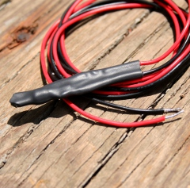
You are building a soil
temperature sensor. We need a waterproof
thermometer that we can burry in the soil. The sensor is made up of a small circuit enclosed in a piece of heat
shrink (to waterproof it).
Supplies:
(see the parts page)
- an LM335 temperature sensor
- a 33K and a 56K resistor
- a short piece of glue-lined heat-shrink tubing
- soldering iron and solder
- lead wires
The circuit for the
actual sensor
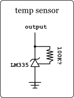This
is the circuit for our waterproof sensor (not to be confused with the
local circuit below).
The resistor in this circuit is optional. You can just get the
value of the LM335 raw and use it in calculations (see below). But if
we want to know the actual temperature we will need to use a resistor
to calibrate the sensor.
If you do want to use a resistor, you can make things simpler to wire up in the garden by soldering
the resistor(s) inline with this sensor. See
more detailed info
below to
see why this is technically not correct. This resistor is to calibrate
the LM335 temperature sensor. The actual value of the resistor will
vary from unit to unit. You will need to calibrate it by trying
different resistors.
The ground leg will be tied to the common ground connection with your
other sensors. The output leg will need a signal wire to get back to
the brain where it will be connected to the
local circuit for this module.
Step-By-Step
Here are the steps to building one of these water proof sensors.
| 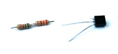 |
Solder the two
resistors together.
|
| 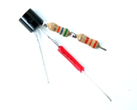 |
Attach the two
resistors to the ADJ leg of the LM335. Attach a piece of lead wire to
the positive leg that will reach to the end of the ADJ leg.
|
| 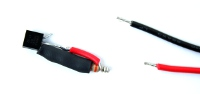 |
Use a piece of
heat-shrink to cover the two-resistor leg. Wrap the end of the positive
leg lead wire around the newly covered ADJ leg.
|
| 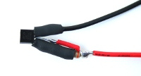 |
Attach a lead wire
to the new combo positive-ADJ leg. Attach a lead wire to the negative
leg of the LM335.Use another small piece of heat-shrink to cover the
negative lead wire where it connects to the LM335.
|
| 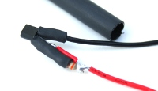 |
Now use a larger
diameter piece of heat-shrink to cover the entire package.
|
| 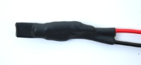 |
While the
heat-shrink is still hot, it is still pliable. So you can squeeze the
package (careful, it's hot) and help the heat-shrink take the shape of
the package. Notice that the tip has been squeezed with pliers.
|
| 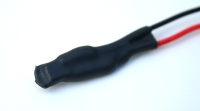 |
You can even clip the end to get
rid of the extra material. Just be sure not to clip too far and break
the seal.
|
| 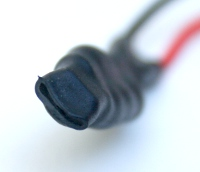 |
Notice that the end is glued
together without opening. This assures complete waterproofing.
|
The local circuit
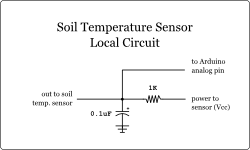Here's
the diagram for the local circuit portion of this module.
The circuit is mainly a voltage divider - the soil temperature sensor
is one half and the 1K resistor is the other half.
There is also a noise filter - the 0.1uF capacitor going to ground. And
of course, an output so the Arduino can take a sensor reading.
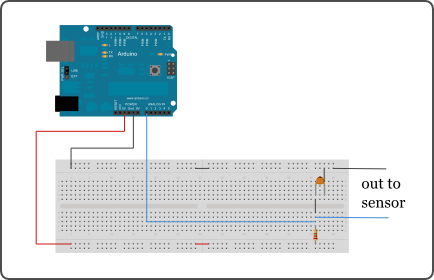And here is what the circuit might look like on your
local circuit breadboard.
So technically we should not package the resistor alongside the temp
sensor. Here's why:
The reason to make a soil temp sensor is so that we can use it to
offset the
simple soil moisture sensor. The reason for this is because soil
resistance changes with temperature. So to add another layer of
accuracy, we can include a temperature sensor near our moisture sensor.
Then we can use the temperature to offset the data from the moisture
sensor to help mitigate the false dry reading caused by changes in
temperature.
Remember that the resistor we are soldering alongside the LM335 is an
ADJ (adjustment) resistor. This means that it is there to calibrate the
sensor properly. BUT, if resistance changes with temperature, then our
adjustment is changing with temperature also. Oops.
This effect is negligible enough for the job this sensor is doing, but
for more accurate results you would want to move the ADJ resistor to
the local circuit board to shield it from those direct-sunlight
temperature effects (even the inside of your house changes temperature).


{kind=link}
{kind=link}
{kind=link}
{kind=link}
{kind=link}
{kind=link}
{kind=link}
{kind=link}
{kind=link}
{kind=link}
{kind=link}